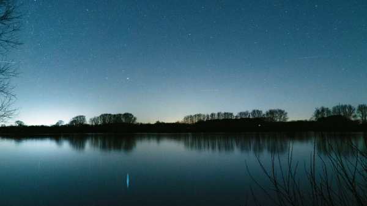

오직, 수면과 쉼을 위한 공간
바이맘 수면 텐트는 잠을 방해하는 요소를 차단하면서도 설치는 간편하게, 관리는 편리하게,
오래도록 안전하게 사용할 수 있도록 설계되었습니다. 수면을 넘어 쉼의 공간을 연구합니다.
당신의 잠이 잠다울 수 있도록,
당신의 공간이 당신다울 수 있도록,
바이맘이 함께 합니다.
당신의 잠이
잠다울 수 있도록,
당신의 공간이
당신다울 수 있도록,
바이맘이 함께 합니다.
바이맘 수면 텐트는 잠을 방해하는 요소를 차단하면서도 설치는 간편하게, 관리는 편리하게,
오래도록 안전하게 사용할 수 있도록 설계되었습니다. 수면을 넘어 쉼의 공간을 연구합니다.